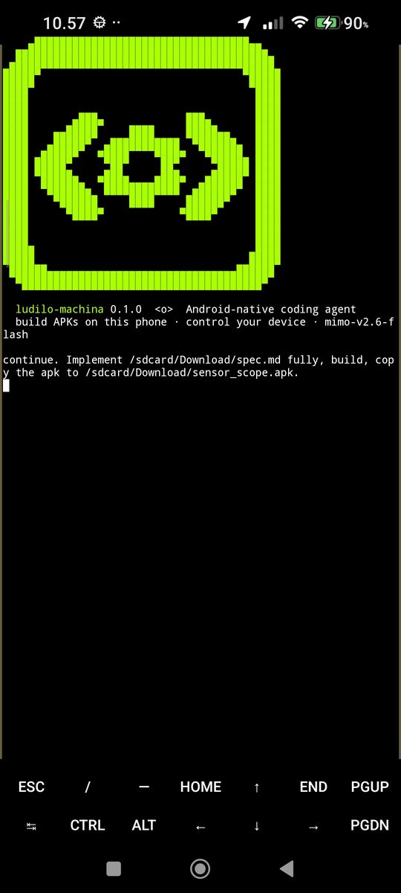
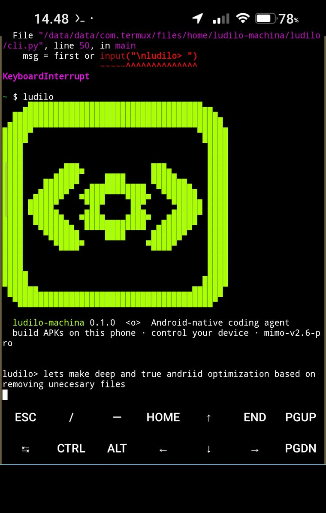
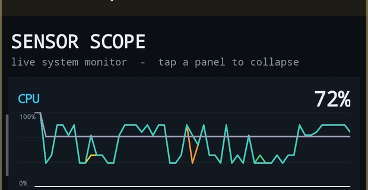
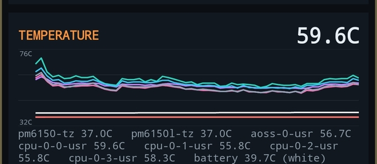
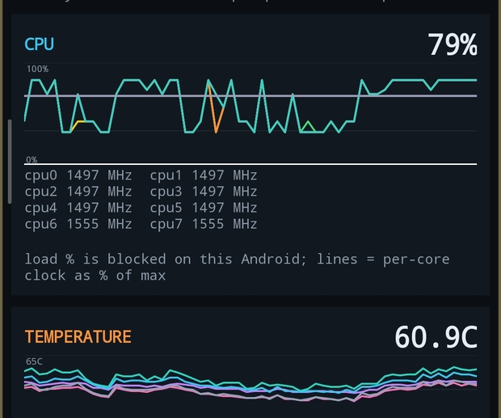

ludilo-machina 0.1.0 <o> · an Android-native coding agent · "ludilo" is Serbian for madnessa serious tool for serious pipelines
LUDILO
is the machina
A coding agent that lives inside Termux. It writes the app, compiles a signed APK on the device — no Gradle, no PC — installs it, launches it, looks at the screen and the logs, and fixes what broke. Up to 30 agent steps per message. Pure-stdlib Python, no pip dependencies.


Verified on one phone so far: Redmi Note 12 Pro, Android 13. 13 commits, all dated 2026-10-01 — this project is one day old in public.
- Runs in
- Termux, on the phone. aarch64
- Tools
- 15, from
build_apktologcat - Model
- your endpoint, your key. Any OpenAI-compatible API
- Default policy
- everything allowed. You write the limits
The loop, on your phone
One user message, at most 30 model steps. The console prints the model's sentences and
one line per tool call — nothing else. Tool results are not printed; they go back to the model, and every
session is saved under ~/.ludilo/sessions/. The block below shows the console's line format
(argument shapes are illustrative; the format is exact, from ludilo/agent.py).
- 01probe_env()
device profile first — the system prompt says use it when unsure - 02new_android_project()
a Java, no-Gradle project scaffold on the device - 03write_file()
sources land where the compiler can see them - 04build_apk()
aapt2 → javac/ecj → d8 → zipalign → apksigner, all local - 05install_apk() + launch_app()
self-ADB over wireless debugging paired to localhost; launch via monkey - 06screenshot() · ui_dump() · logcat()
the agent looks at what it made — then fixes what broke
When the model answers without a tool call the loop stops early. When it errors, the CLI prints
[model error: …] — your chat is kept, just say 'continue'; requests retry at 0/2/5/10 s on 429/5xx/network errors.
Proof: Sensor Scope
A live system monitor built and signed on the phone by ludilo-machina's own toolchain —
aapt2, javac, d8, zipalign, apksigner. No Gradle, no PC.
Source is in examples/sensor_scope. Sixty-second scrolling line graphs; tap a panel to collapse it.



/proc/stat on this phone, so the CPU graph shows each core's clock as a percentage of its max — and the app says so in its own UI. Thermal zones like ibat, vbat, soc that are not temperatures are filtered out.The APK line
Termux has no Gradle worth running and no zipalign package. So the pipeline is
assembled from what Termux does have — plus one tool ludilo carries itself.
- aapt2 compile → linkresources and manifest in, base APK and
R.javaout - javac (or ecj)Java sources compiled with
--release 8 - d8.class →
classes.dex, added to the APK - zipalign, in pure PythonTermux ships no zipalign package, so ludilo aligns the archive itself
- keytool + apksignera local debug.keystore, generated on first run; the APK is signed on the phone
- install + launch
adb install -rto localhost via wireless debugging, launch via monkey
Break it out of the box
Termux from F-Droid or GitHub (the Play build is outdated), Android wireless debugging paired to
localhost, and a model endpoint you already have. Setup installs nine packages and the android-33
android.jar; it is not a one-command miracle — the docs say what still has to be true about your device.
Everything is allowed by default. Then you tighten it, per tool or glob:
deny_shell is a plain substring match on shell commands — a tripwire,
not a sandbox, and we will not call it one. Every tool-call attempt lands append-only in
~/.ludilo/actions.log. ludilo continue picks the chat back up; ludilo status
shows the model, the key, the toolchain and your token totals.
The gaps, stated
A page that hides its holes is selling you something. These are open, in the repo's own words where possible.
- One deviceVerified on a Redmi Note 12 Pro, Android 13. "Any Android" is not a claim we can make.
- Young repo13 commits, all 2026-10-01. The README's Status section still says the APK pipeline has "not yet run on a phone" — commit c4620e2 says otherwise; git log wins.
- Termux:API appThe
termux_apitool needs the Termux:API Android app in practice; setup.sh installs the package but the repo does not document the app. That is a docs gap, not a feature. - No license file yetThe repo is public; a license is not chosen yet, so we name none.
- The model is yoursLudilo calls whatever OpenAI-compatible endpoint you configure. There is no hosted service, no account, no pricing page.
- "Ask before destructive" is a requestThe system prompt asks the model politely. Only a
confirmlimit actually enforces it.
Your phone is
not finished.
Why build apps on a phone with an AI agent? Because it is slightly mad — and now the page agrees with itself again.
Thank you for restoring sanity. The lever is right there in the header if you regret it.